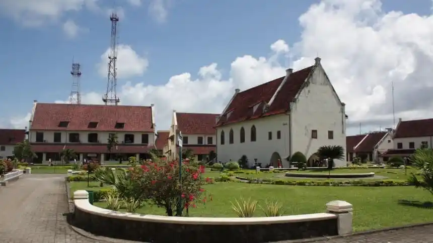
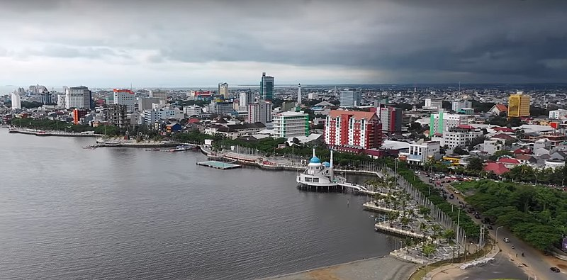
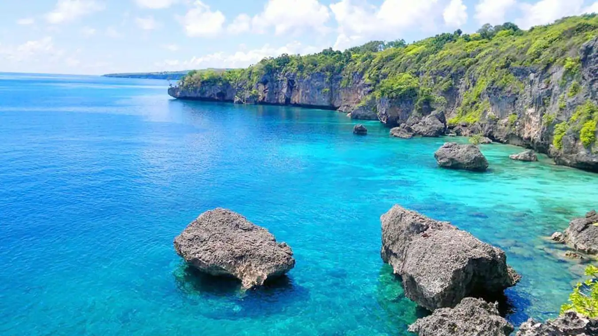
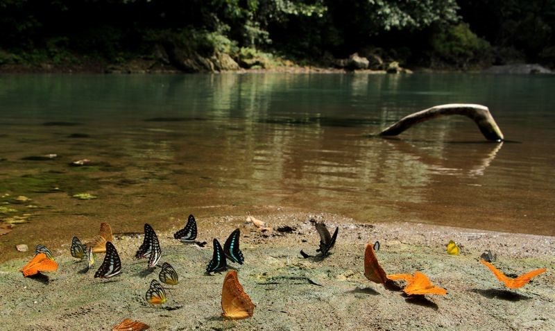

Sejarah

Nama Makassar sudah disebutkan dalam pupuh 14/3 kitab Nagarakretagama karya Mpu Prapanca pada abad ke-14, sebagai salah satu
daerah taklukkan Majapahit. Walaupun demikian, Raja Gowa ke-9 Tumaparisi Kallonna (1510-1546) diperkirakan adalah tokoh pertama
yang benar-benar mengembangkan kota Makassar. Ia memindahkan pusat kerajaan dari pedalaman ke tepi pantai, mendirikan benteng di muara
Sungai Jeneberang, serta mengangkat seorang syahbandar untuk mengatur perdagangan.
Pada abad ke-16, Makassar menjadi pusat perdagangan yang dominan di Indonesia Timur, sekaligus menjadi salah satu kota terbesar di
Asia Tenggara. Raja-raja Makassar menerapkan kebijakan perdagangan bebas yang ketat, di mana seluruh pengunjung ke Makassar berhak
melakukan perniagaan di sana dan menolak upaya VOC (Belanda) untuk memperoleh hak monopoli di kota tersebut.
Menurut catatan sejarah, cikal bakal lahirnya Kota Makassar berawal dari 1 April 1906. Saat itu pemerintah Hindia Belanda membentuk
dewan pemerintahan Gemeentee di Kampung Baru, yang terletak di kawasan Pantai Losari dan Benteng Fort Rotterdam. Kawasan ini yang
berkembang menjadi kota Makassar hingga kini disebut hari kebudayaan makassar, sebelumnya merupakan hari jadi Kotamadya Ujung Pandang.
Geografis

Makassar adalah Ibu Kota Provinsi Sulawesi Selatan, yang terletak di bagian Selatan Pulau Sulawesi yang dahulu disebut Ujung Pandang,
terletak antara 119º24’17’38” Bujur Timur dan 5º8’6’19” Lintang Selatan yang berbatasan sebelah Utara dengan Kabupaten Maros, sebelah
Timur Kabupaten Maros, sebelah selatan Kabupaten Gowa dan sebelah Barat adalah Selat Makassar. Kota Makassar memiliki topografi dengan
kemiringan lahan 0-2°(datar) dan kemiringan lahan 3-15° (bergelombang). Luas Wilayah Kota Makassar tercatat 175,77 km persegi. Kota
Makassar memiliki kondisi iklim sedang hingga tropis memiliki suhu udara rata-rata berkisar antara 26,°C sampai dengan 29°C.
Kota Makassar adalah kota yang terletak dekat dengan pantai yang membentang sepanjang koridor barat dan utara dan juga dikenal sebagai
“Waterfront City” yang didalamnya mengalir beberapa sungai (Sungai Tallo, Sungai Jeneberang, dan Sungai Pampang) yang kesemuanya
bermuara ke dalam kota. Kota Makassar merupakan hamparan daratan rendah yang berada pada ketinggian antara 0-25 meter dari permukaan
laut. Dari kondisi ini menyebabkan Kota Makassar sering mengalami genangan air pada musim hujan, terutama pada saat turun hujan
bersamaan dengan naiknya air pasang.
Secara administrasi Kota Makassar dibagi menjadi 15 kecamatan dengan 153 kelurahan. Di antara 15 kecamatan tersebut, ada tujuh kecamatan
yang berbatasan dengan pantai yaitu Kecamatan Tamalate, Kecamatan Mariso, Kecamatan Wajo, Kecamatan Ujung Tanah, Kecamatan Tallo,
Kecamatan Tamalanrea, dan Kecamatan Biringkanaya.
Batas-batas administrasi Kota Makassar adalah:
- Batas Utara: Kabupaten Maros
- Batas Timur: Kabupaten Maros
- Batas Selatan: Kabupaten Gowa dan Kabupaten Takalar
- Batas Barat: Selat Makassar
Secara umum topografi Kota Makassar dikelompokkan menjadi dua bagian yaitu :
- Bagian Barat ke arah Utara relatif rendah dekat dengan pesisir pantai.
- Bagian Timur dengan keadaan topografi berbukit seperti di Kelurahan Antang Kecamatan Panakukang.
Wisata
Sebagai kota terbesar di Indonesia Timur, Makassar menyimpan segudang destinasi wisata yang menarik. Tak hanya dari Fort Rotterdam
atau Pantai Losari, ada banyak sekali destinasi menarik yang sudah menunggu untuk kamu kunjungi. Tak hanya kota Makassar, kawasan
sekitarnya pun juga sangat indah jika kamu mau mengeksplorasi objek wisata di Makassar lebih jauh.
Tebing Apparalang

Kalau berlibur di Makassar, coba sempatkan main ke Pantai Appalarang di daerah Bulukumba. Tempat wisata di
Makassar ini bisa dicapai dengan 4 jam berkendara dari Kota Makassar. Meskipun cukup jauh, semua itu akan
terbayarkan saat kamu melihat indahnya pantai di balik tebing. Kalau mau menikmati pemandangan laut biru dengan
tenang, kamu bisa duduk di anjungan kayu yang menjorok ke arah laut. Kamu juga bisa main air maupun snorkeling
di sini karena ombak di Pantai Appalarang tidak terlalu besar.
Taman Nasional Bantimurung

Taman nasional yang lebih dikenal dengan nama TN Babul ini berada di kawasan seluas 43 hektare dengan kekayaan alam
dan faunanya. TN Babul menawarkan beberapa objek wisata, seperti Rammang-Rammang di mana terdapat Goa Mimpi, Goa Batu,
dan hutan batu kapur, The Kingdom of Butterflies di mana kamu bisa melihat banyak spesies kupu-kupu termasuk yang langka,
Air Terjun Bantimurung, dan Gunung Bulusaraung.
Lokasi
Koleksi Foto